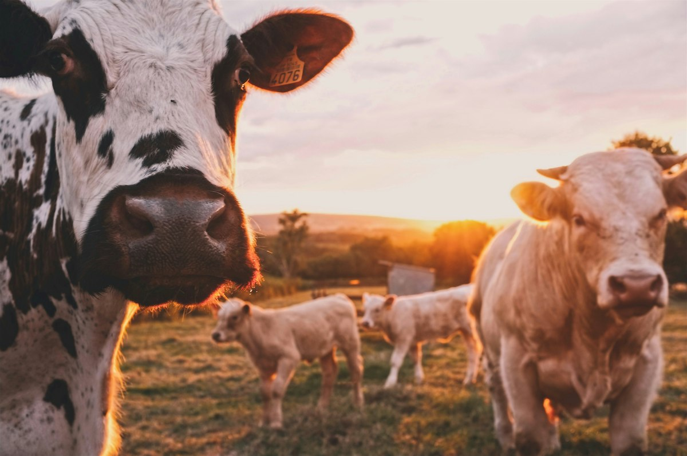
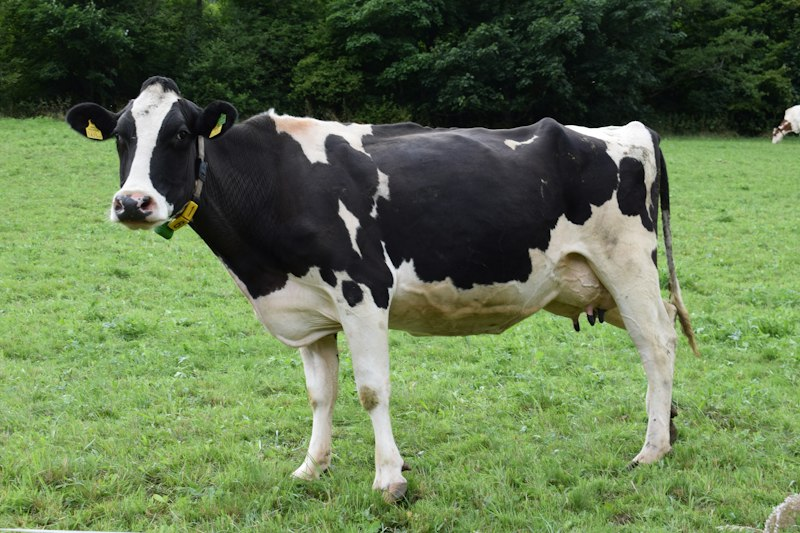
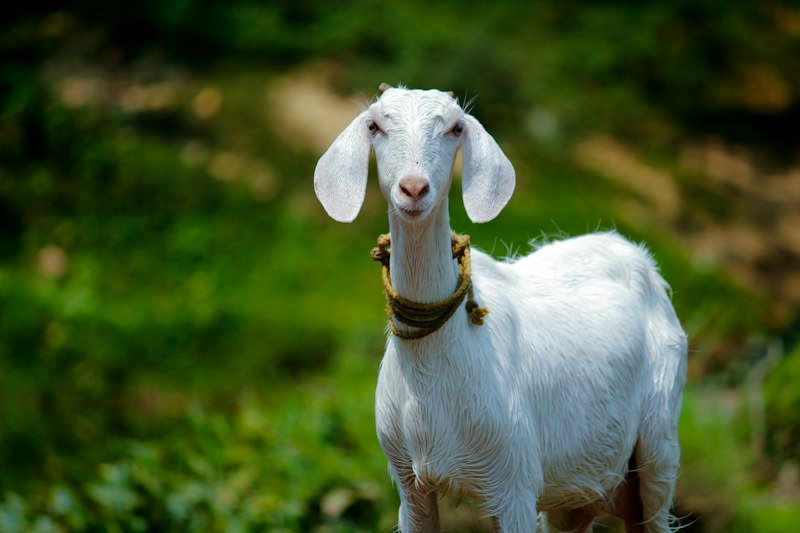
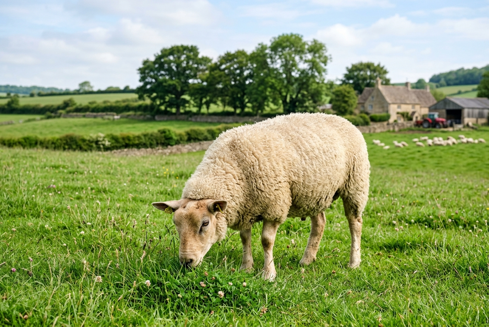

Healthy Animals,
Happy Farmers
Your Livestock’s Health Matters
Access animal healthcare information, nutrition guidance, preventive care tips and veterinary assistance in one place. Built specifically to empower dairy, livestock, and smallholder farmers.
4 Major
Livestock Species
15+ Diseases
Symptoms & First Aid
100% Free
Educational Platform

Evidence-Based Care
Educational guidance verified with veterinary protocols
Essential Livestock Healthcare Services
Everything a farmer needs to maintain herd health, boost milk yield, and act quickly during disease outbreaks.
Veterinary Help
Get access to veterinary assistance, government polyclinics, and verified local doctor contact information.
Find Clinics →Disease Guide
Learn about common livestock diseases, early symptoms, critical warning signs, and practical prevention.
Disease Library →Nutrition Guide
Explore animal-specific feeding, green fodder balance, dry roughage, and calculate custom daily feed rations.
Feeding Guides →Preventive Care
Learn practical preventive healthcare, vaccination timetables, housing hygiene, and track shot reminders.
Preventive Tips →Animal-Specific Healthcare
Tailored management practices for cattle, buffaloes, goats, and sheep.

Dairy & DraughtDairy Cow (गाय)
High milk production management, mastitis vigilance, balanced dry matter intake, and lactation cycles.
Water Buffalo (भैंस)
Heat stress mitigation, wallowing requirements, silent heat detection, and high-roughage feed utilization.

Small RuminantDomestic Goat (बकरी)
Browsing pasture habits, raised dry floor shelter, PPR vaccination awareness, and internal parasite control.

Wool & MeatDomestic Sheep (भेड़)
Flock grazing, fleece shearing hygiene, foot rot eradication, and copper toxicity prevention.
Why Smart Animal Care?
Designed to bridge the gap between complex veterinary science and daily farm management.
Easy Access to Information
Straightforward, farmer-centric language without medical jargon. Quick answers to day-to-day feeding, housing, and hygiene questions.
Animal-Specific Guidance
Cattle, buffaloes, goats, and sheep have unique digestive anatomies, gestation periods, and temperature baselines. We provide species-accurate data.
Preventive Healthcare Awareness
Prevention costs a fraction of treatment. Our vaccination timetables and biosecurity checklists keep infectious diseases out of your shed.
Veterinary Assistance Locator
Locate nearby government veterinary dispensaries, mobile ambulance services, and certified cattle practitioners when clinical intervention is required.
How It Works
A practical 4-step path to healthier livestock and maximum farm profitability.
Select Your Animal
Choose your livestock category (Cow, Buffalo, Goat, Sheep) to access targeted guidelines.
Explore Health & Feed
Calculate customized dry matter and fodder rations to maintain steady milk and meat yields.
Learn Preventive Care
Adopt regular deworming, shed sanitation, and save upcoming vaccination dates in your browser.
Find Professional Help
Contact qualified veterinarians whenever abnormal symptoms or high fevers are identified.
Need Immediate Animal Medical Support?
If your animal shows sudden collapse, bloat, high fever, or labor complications, call the National Animal Emergency Toll-Free Helpline or find a verified veterinary dispensary right away.